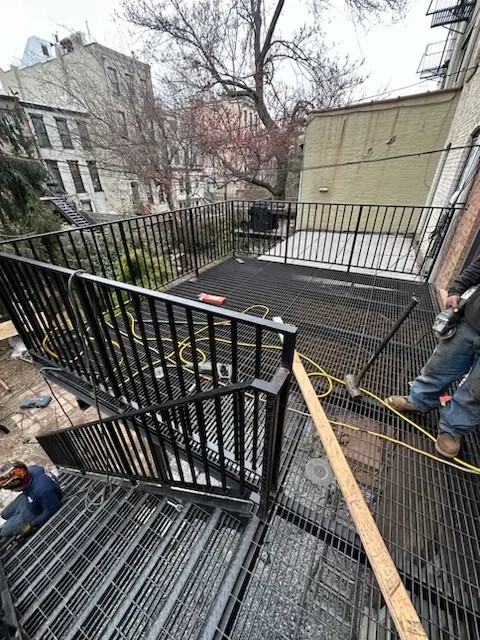

What Credentials Should a Steel Fabricator in Brooklyn Have?
Before any fabrication work begins on a Brooklyn property, verify that the contractor holds valid NYC licensing, carries general liability insurance, and has demonstrable experience with DOB permit filing. A qualified steel fabricator should be able to show you previous permit approvals, not just photos of finished jobs. In Brooklyn's 11212 corridor — where commercial and residential zoning often overlap — fabricators must navigate multiple inspection stages. Ask specifically whether the fabricator handles permit filing in-house or subcontracts it, because that distinction affects your timeline and accountability. Credentials separate professional fabricators from unlicensed operations.
How Long Has the Fabricator Worked on Brooklyn Properties?
Experience in New York City metal fabrication is not transferable from other markets. Brooklyn's building stock — ranging from 1890s brownstones in Bed-Stuy to post-war industrial conversions in Bushwick — presents unique structural conditions that only local experience teaches. Ask prospective fabricators how many projects they have completed specifically in Brooklyn, and request references from clients in your neighborhood or building type. Steel Masters NYC has been fabricating and installing custom metalwork in Brooklyn since 1972, which means the team has encountered virtually every structural condition the borough presents. commercial steel fabrication NYC

What Does the Fabrication and Installation Process Look Like?
Understanding the full workflow before signing a contract helps you set realistic expectations and avoid scope disputes. A professional steel fabricator in Brooklyn will conduct a site visit, take precise measurements, develop shop drawings, and submit permit applications before any steel is cut. Ask whether fabrication happens in-house or at a third-party shop, because in-house fabrication gives the contractor direct quality control throughout the process. Steel Masters NYC fabricates all custom components at its own facility, ensuring that tolerances, finishes, and structural specifications match what was agreed in the shop drawings. Timeline transparency is a marker of professionalism.
What Types of Steel Projects Does the Fabricator Specialize In?
Not every steel fabricator in Brooklyn handles the same scope of work. Some specialize in ornamental ironwork; others focus on structural steel alterations or security infrastructure. The clearest sign of a well-rounded fabricator is a broad service menu backed by a substantial project portfolio. Steel Masters NYC designs and installs sidewalk cellar doors, interior and outdoor steel staircases, Economaster trash bin enclosures, roof railings, expanded metal security cages, pipe railings, guard railings, and rolldown gates. Whether you manage a commercial building on Atlantic Ave or own a brownstone near Prospect Park, this range of services means your project can be completed by a single trusted contractor. iron works Brooklyn

How Do Crown Heights and East New York Property Owners Benefit from Local Steel Fabricators?
For property owners in Crown Heights, East New York, and Brownsville, working with a Brooklyn-based steel fabricator means faster site visits, lower mobilization costs, and a contractor who understands local DOB district office requirements. Fabricators headquartered outside the borough often charge travel premiums and lack the local inspector relationships that help projects move efficiently. Steel Masters NYC operates out of 135 Liberty Ave in the heart of Brooklyn's 11212 ZIP code, making it ideally positioned to serve clients from Canarsie to Ridgewood without the delays that come from longer supply chains. Local presence is a practical advantage, not just a marketing claim. steel security cages
What Should You Expect to Pay for Custom Steel Fabrication in Brooklyn?
Pricing for custom steel fabrication in New York City depends on material grades, project complexity, permit requirements, and site conditions. Requesting itemized quotes from multiple fabricators is always recommended — but beware of unusually low bids that exclude permit filing, engineering stamps, or surface coatings. A transparent steel fabricator in Brooklyn will provide a written proposal that breaks out material, labor, permits, and warranty terms. Steel Masters NYC provides clear, written estimates for all projects and never adds hidden charges after work begins. Property owners who compare quotes on an apples-to-apples basis consistently find that experienced local fabricators offer better total value than low-bid alternatives. sidewalk cellar door installation
Steel Masters NYC has been Brooklyn's trusted steel fabricator since 1972, serving commercial and residential clients across Kings County with custom cellar doors, steel staircases, security enclosures, rolldown gates, roof railings, and structural steel alterations. With more than five decades of hands-on fabrication experience, the team brings genuine E-E-A-T to every project — from concept drawings through NYC DOB compliance and on-site installation. Clients across Brooklyn and the surrounding boroughs return to Steel Masters NYC because the work is built to last, priced transparently, and delivered on schedule.
Visit Steel Masters NYC at 135 Liberty Ave, Brooklyn, NY 11212 or call (888) 577-8335 today
If you are researching metal fabrication New York options for your property, Steel Masters NYC offers free consultations and project assessments for Brooklyn property owners, contractors, and building managers.